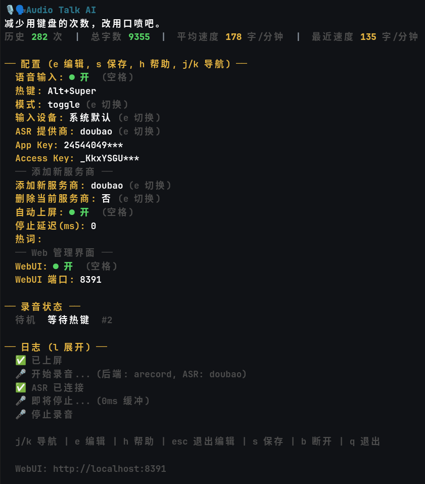
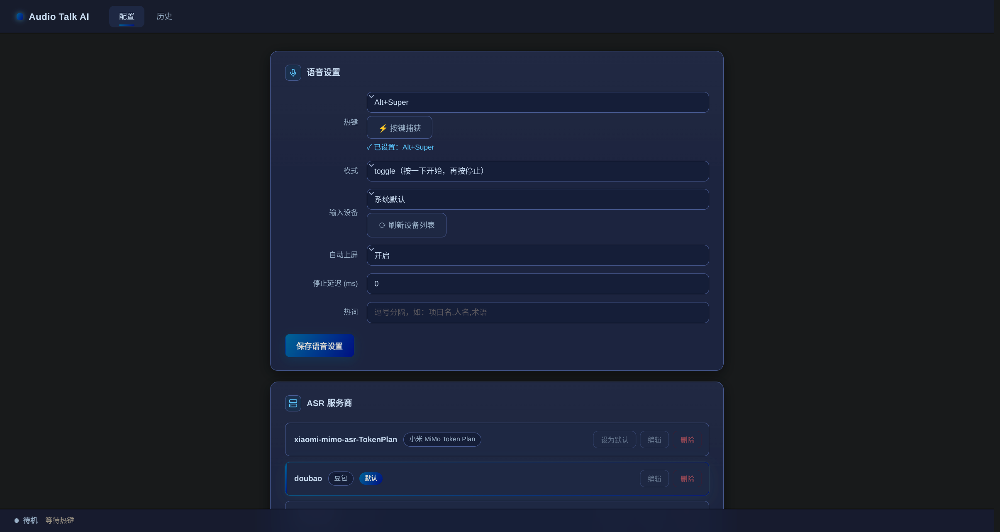
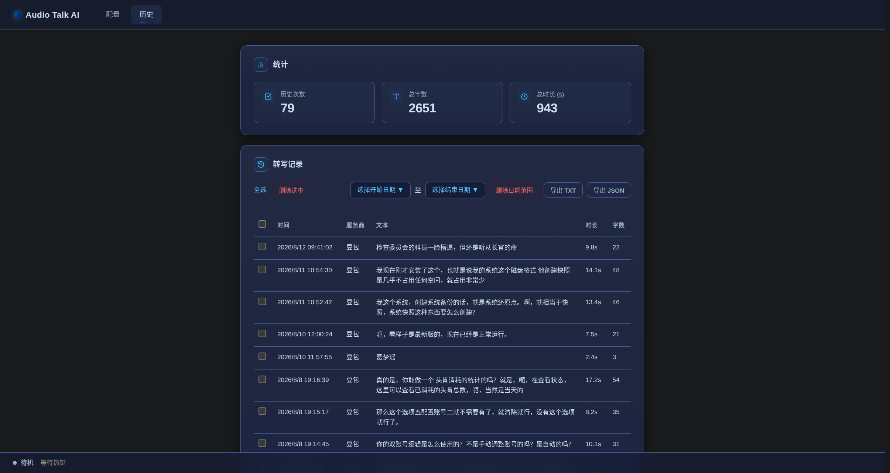

Audio Talk AI 是一个面向桌面的语音输入工具。按住全局快捷键说话， 语音识别结果自动复制到剪贴板，或直接上屏到当前输入框。 写代码、聊天、记笔记、写长文，开口即得。
从热键触发到自动上屏，整条链路都为「少打字、多说几句」优化。
支持 toggle（按一下开始、再按停止）和 hold（按住说话）两种模式。默认 F9，也支持 Alt+Super 等修饰键组合。
豆包、OpenAI Realtime/Whisper、讯飞全系、小米 MiMo。在 TUI 中一键切换，按需选择流式或批量转写。
识别结果自动写入剪贴板，或直接粘贴到当前焦点输入框，并在粘贴后还原你原有的剪贴板内容。
Wayland / X11 / macOS / Windows 顶层悬浮胶囊，实时显示录音状态与波形，不打断你的工作流。
终端里的 Bubble Tea 配置界面，加上浏览器 http://localhost:8391 的 Web 管理台，配置实时同步。
为项目名、人名、英文术语和专有名词配置热词，显著提升这些词的识别准确率。
记录历史次数、总字数、平均速度和最近速度，量化你的「口喷」效率。
Linux / macOS 上用 --d 启动可断开 TUI 会话，断开后热键依旧生效，随时 --di 重连。
配置中的 API 密钥以 AES-256-GCM 加密存储，明文仅存在于运行时内存，迁移自动加密、降级不兼容。
流式实时出字，批量录完再识别。覆盖国内外主流服务商，方言、长音频、说话人分离都有对应方案。
火山引擎，二进制 WebSocket 流式
gpt-4o-transcribe 系列，WebSocket
动态修正，支持 202 种方言
医疗 / 政务 / 金融垂直领域
大模型，最长 8 小时，说话人分离
apiKey 认证，最长 5 小时
兼容 Ollama / vLLM 等第三方
标准版，最长 5 小时
202 方言 / 37 语种免切
1 小时音频约 20 秒出结果
中英双语 + 方言
国内节点
每个平台都调用原生 API，而非 Electron 套壳——响应快、占用低。
热键基于 evdev（需 input 组权限）；剪贴板用 wl-clipboard，上屏用 wtype 或 uinput。
原生 X11 全局热键，XTest 模拟按键上屏，X11 原生叠加层胶囊。
CGEventTap 热键，CoreAudio 录音，NSPasteboard 剪贴板，AppKit 胶囊。
WH_KEYBOARD_LL 低级钩子，ffmpeg/sox 录音，SendInput 模拟 Ctrl+V，纯 Go 无 CGO。
终端里的 TUI 与浏览器里的 WebUI，两套界面管同一份配置。



选你的平台，复制命令即可。安装后运行 --doctor 检查环境。
# 下载最新 release（约 9MB，无需编译器）
curl -L -o audio-talk-ai \
https://gitee.com/AY77-OP/audio-talk-ai/releases/download/v0.1.0/audio-talk-ai
chmod +x audio-talk-ai
sudo mv audio-talk-ai /usr/local/bin/ # 或 ~/.local/bin/
audio-talk-ai --doctor # 环境检查# Debian / Ubuntu 安装构建依赖
sudo apt install golang-go build-essential \
libx11-dev libxtst-dev libxext-dev libxinerama-dev libwayland-dev
git clone https://gitee.com/AY77-OP/audio-talk-ai.git
cd audio-talk-ai
make build # 或 go build -o build/audio-talk-ai ./cmd/audio-talk-ai
make install # 安装到 ~/.local/bin/# 需要 clang 与 macOS SDK（无需完整 Xcode）
xcode-select --install
git clone https://gitee.com/AY77-OP/audio-talk-ai.git
cd audio-talk-ai
make build
make install # 安装到 ~/.local/bin/
# 启动后授予「终端 App」辅助功能与麦克风权限
audio-talk-ai --doctor# Option = Alt，Command/Cmd = Super
[voice]
push_to_talk = "Option+Command":: 录音依赖 ffmpeg（推荐）或 sox，需加入 PATH
git clone https://gitee.com/AY77-OP/audio-talk-ai.git
cd audio-talk-ai
go build -o audio-talk-ai.exe ./cmd/audio-talk-ai
:: 安装到 %LOCALAPPDATA%\Programs\audio-talk-ai\
audio-talk-ai.exe --install
audio-talk-ai.exe --doctor:: Win 键 = Super，Ctrl = Control
[voice]
push_to_talk = "Win+Alt"